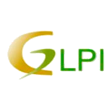

Governo
Com o intuito de atender às necessidades administrativas do Setor Público, na esfera municipal, a Xis Soluções Digitais homologou alguns sistemas, disponibilizados no Portal do Software Público Brasileiro-(SPB)¹ bem como outras softwares livres², e, aliado à nossa expertise oferecemos um conjunto integrado de serviços e soluções inteligentes destinados a setores públicos municipais, podendo ser utilizadas separadamente ou em conjunto visando atender Prefeituras, suas secretarias e subdivisões. A saber:
| Moodle | |
 |
O Moodle é um software livre, de apoio à aprendizagem, executado num ambiente virtual. |
| GLPI | |
|  | GLPI é uma aplicação livre, distribuída sob a licença GPL para a gestão de parques de computador e helpdesk. |
Além dessas soluções apresentadas ofereceremos serviços relacionados a outros softwares disponíveis no Portal do Software Público, outras soluções livres bem como desenvolver soluções sob demanda. Consulte-nos para mais esclarecimentos.
A Xis Soluções Digitais participa ativamente de licitações nos processos de contratação de serviços TI para o setor público, independente da modalidade (pregão, convite, concorrência), tipo (menor preço, melhor técnica, técnica e preço). Com idoneidade e excelência.
_____________________
¹ O Software Público Brasileiro (SPB) é um conceito que há alguns anos vem sendo mencionado no âmbito do poder executivo federal, para se referir a um repositório de softwares livres cujas aplicações são de interesse público, mantido pela Secretaria de Logística e Tecnologia da Informação (SLTI), órgão integrante do Ministério do Planejamento. Um dos principais motivos relacionados às intenções da Administração Pública Federa (APF) em compartilhar sistemas através do modelo do SPB é justamente a possibilidade de reduzir os custos, visto que reduz esforços de desenvolvimento de novos softwares, há aproveitamento de códigos estáveis já existentes, economizando tempo de produção.
² Software Livre, software de código aberto ou software aberto é qualquer programa de computador cujo código-fonte deve ser disponibilizado para permitir o uso, a cópia, o estudo e a redistribuição.

|